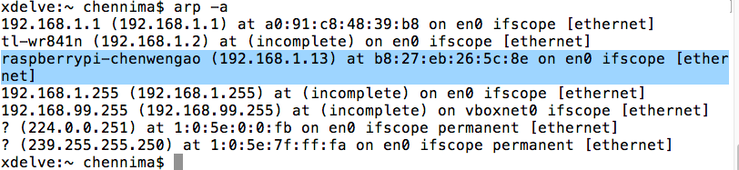

本文说的是只有主板情况下找ip。
使用arp命令：
arp -a
轻而易举就可以找到了。
如果子网内没有这个记录，而你确定树莓派肯定已经在这个子网内，那么首先使用子网ip扫描工具快速扫一遍在线主机，然后再使用arp命令搜索树莓派的ip。
以下是我以前使用udp的方式寻找的，现在回过头来发现这种方法绕路了，毕竟当年图样。
我的想法是通过udp广播的方式，流程如下： 0. 树莓派开机启动后监听udp的某个端口 0. 让同一个子网内的自己的电脑每隔一秒发出广播消息 "where are you" 0. 树莓派收到消息"where are you"后，响应"raspberry" 0. 自己的电脑收到 "raspberry" 后输出发送方的ip，即树莓派ip
nodejs代码
树莓派内部回复脚本<需要设为开机启动>
/**
树莓派广播接收端
用于外部获取树莓派内网ip
*/
var dgram=require(dgram);
var s = dgram.createSocket(udp4);
s.bind(1234, function(){
s.setBroadcast(true);
});
s.on(message,function(msg,rinfo){
if(msg+!==where are you)return;
var buf=new Buffer(raspberry);
s.send(buf,0,buf.length,rinfo.port,rinfo.address);
});
外部广播询问脚本
/**
树莓派广播发送端
用于外部获取树莓派内网ip
*/
var dgram=require(dgram);
var s = dgram.createSocket(udp4);
s.bind(1234, function(e) {
s.setBroadcast(true);
setInterval(function(){
var ni=require(os).networkInterfaces();
for(var id in ni) ni[id].map(function(nw){
if(nw.family===IPv6)return;
var ip=nw.address.split(.);
var buf=new Buffer(where are you);
var mask=nw.netmask.split(.);
// 网络地址
var netaddress=mask.map(function(c,i){
return c&ip[i];
});
var broadcast=netaddress.map(function(c,i){
return c|(0xff^mask[i]);
});
s.send(buf,0,buf.length,1234,broadcast.join(.));
});
},1000);
});
s.on(message,function(msg,rinfo){
if(msg.toString()===raspberry){
console.log(找到内网树莓派ip：,rinfo.address);
process.exit();
}
});
相关文档
随便看看